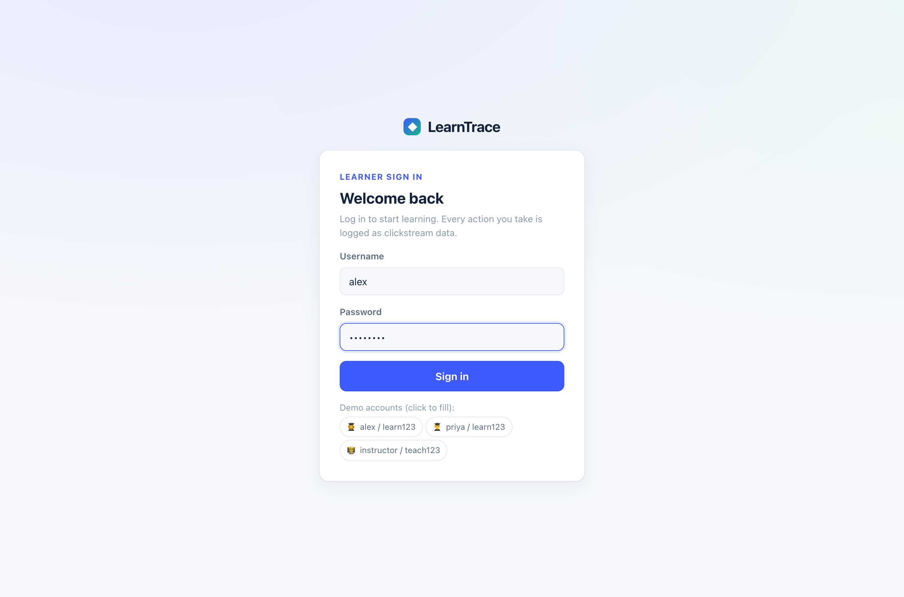
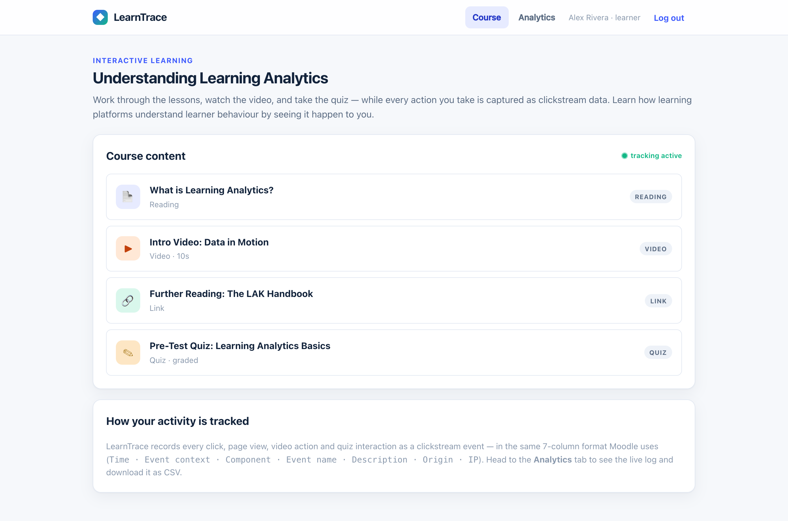
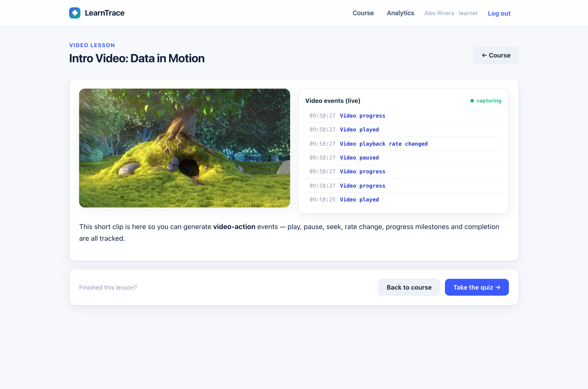
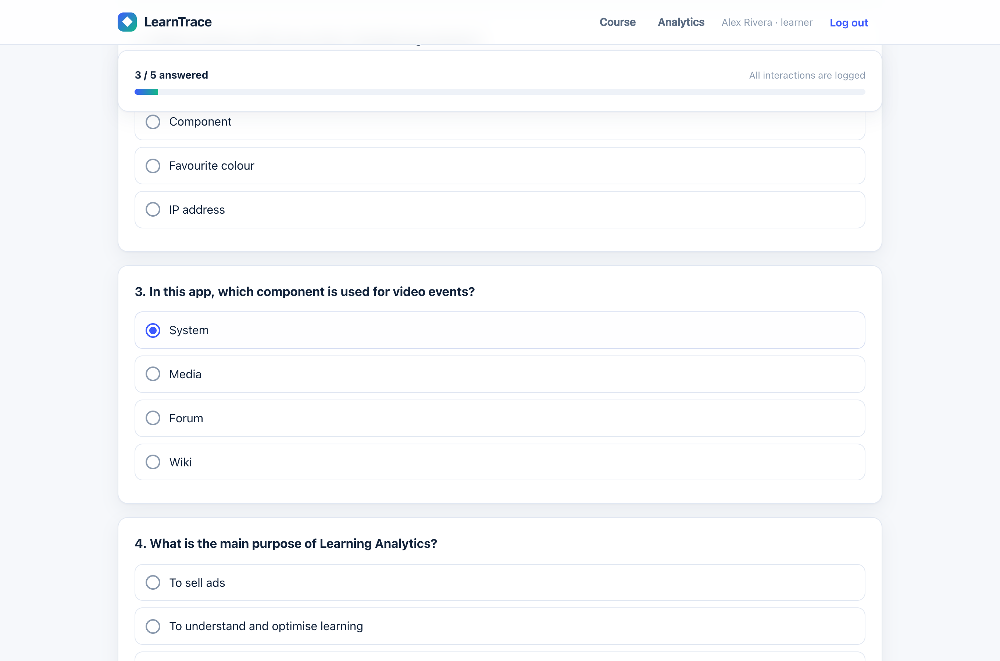
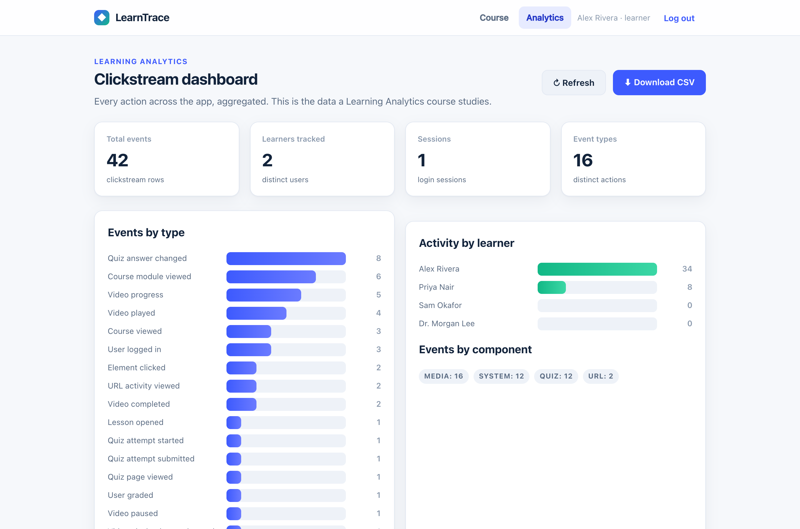

An interactive learning application that captures every learner action — clicks, page views, video actions, and quiz attempts — and stores it as Moodle-format clickstream data.
The brief pointed to a Moodle clickstream export as the data model — a seven-column activity log.
We made this format the core of the app: LearnTrace emits and exports events in exactly this shape.
Session-cookie auth over scrypt-hashed passwords, with multiple demo learners.
A text lesson, a tracked video, an external resource, and a graded quiz.
Clicks, page views, video play/pause/seek/progress, and the quiz lifecycle.
Every action becomes one row in a SQLite events table.
Live totals, charts, quiz performance, and an activity feed.
Download the log as a CSV matching the exact seven Moodle columns.
A single-page app with client-side routing and a hand-built CSS design system.
REST API for auth, content, quiz grading, event ingestion, analytics, and export.
Node's built-in driver — zero native builds, a single file, fully local.
No cloud keys, ideal for a demo, and every layer is easy to inspect.
A clean sign-in with demo accounts. The login event is recorded server-side with the session, IP, and user agent — the first row in the clickstream.

One course with four activity types — reading, video, an external link, and a graded quiz. Opening any of them logs a Course module viewed event.

The HTML5 player emits an event for every interaction — and a live feed shows them landing in real time.

Every stage is a distinct event, so we can reconstruct exactly how a learner worked through the quiz.
Grading is server-side — answers are never exposed to the client.

Delegated click listener, route-change page views, and video/quiz hooks queue events.
Batched every 5s, on route change, and on unload via sendBeacon.
Stamps time, user, IP, and a Moodle-style sentence.
One row per event in the SQLite events table.
Why sendBeacon? In a single-page app, navigating away would normally drop buffered events. navigator.sendBeacon guarantees the final batch is delivered even as the page unloads.
The stored clickstream, made legible — the data a learning-analytics course actually studies.

One click downloads the whole clickstream as a CSV whose columns match the instructor's Moodle sample exactly — the same shape real learning platforms produce.
| Time | Event context | Component | Event name | Description | Origin | IP address |
|---|---|---|---|---|---|---|
| 28/07/26, 14:31:04 | Course: ET617 Educational App Design | System | User logged in | The user with id '1' logged in. | web | 10.0.0.1 |
| 28/07/26, 14:35:19 | Video: Intro Video | Media | Video played | …played the video 'Intro' at 00:00. | web | 10.0.0.1 |
| 28/07/26, 14:38:02 | Quiz: Pre-Test Quiz | Quiz | Quiz attempt submitted | …submitted the attempt scoring 6/10. | web | 10.0.0.1 |
Components tracked: SystemMediaQuizURL
Working web app — login, content, tracking, dashboard
GitHub repository with README
Clickstream stored and CSV export
Demo video and this presentation
github.com/Sanidhya-Katiyar/Basic-App-Design-Assignment---ET617